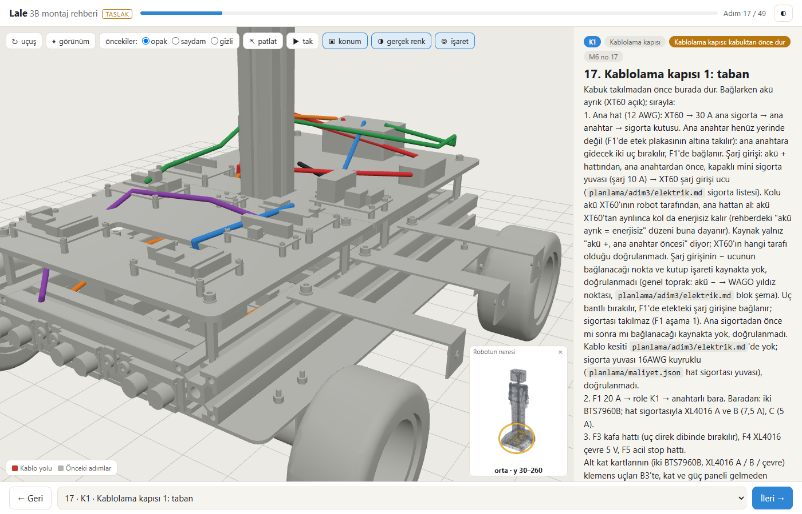
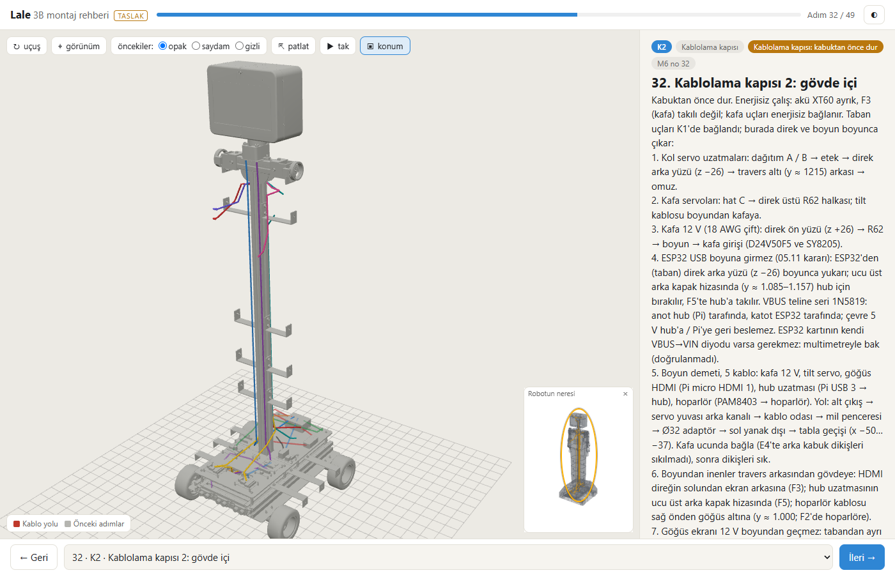
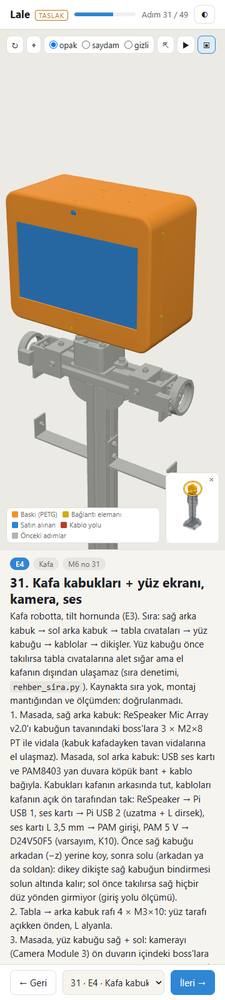

Lale F7b: yazdırılabilir rehber, kafa adımları, elektrik güvenliği (P7.2)
Ajan C (ölçüm ve kayıt) · 09.11.2026 · dal lale-duzeltme · kaynaklar: F7b-brief.md, F7b-gunluk.md (düzeltme turu 1 ve 2 dahil), F7b-kontrol.md (son kontrol, düzeltme 2: GEÇER), planlama/rehber/kontrol.json, planlama/rehber/Lale-montaj-rehberi.pdf
kontrol.json (18:26); konsol hatası 0; parça 1192 ↔ 1192C'nin commit öncesi koşuları (18:36, PYTHONIOENCODING=utf-8, py -3 -B; FreeCAD açılmadı, kilit "boş", FreeCAD süreci 0; tarayıcıda yeniden üretim yapılmadı, rehber verisi ve görüntüler A'nın düzeltme turu 2 koşusundan, 18:21–18:26): carpisma_kos.py kontrol çıkış 0; regresyon.py --yazma çıkış 0; rehber_denetim.py çıkış 0. Denetim ve tarama koşuları depoya yazmadı (kontrol.json ve carpisma-sonuc.json saatleri değişmedi). Takma ad araması, ad komut satırına ve hiçbir dosyaya yazılmadan, git geçmişinden çalışma anında türetilerek yapıldı (büyük / küçük harf ve Türkçe i / İ / ı biçimleri dahil; bilinen kapsam dışı dosyalarda pozitif kontrolle sınandı).
Kabul ölçütleri (C'nin ölçümleri)
| Ölçüt | Ölçülen | Kaynak | Durum |
|---|---|---|---|
| Kafa, hoparlör, hub metinleri görünen parçalarla uyumlu; doğrulanmamışlar işaretli | çelişki 0; 14 bileşen × adım anma denetimi hepsi metinde | kontrol.json denetim.tutarlilik_celiski; B §1 kaynak karşılaştırması | GEÇER |
| ASCII kalıntı 0 (betikle) | 0 | rehber_denetim.py (C, 18:36); denetim.ascii_kalinti_sayi | GEÇER |
| Parça listesinde yanlış ad gruplaması 0 | 0 (eski kural kod + tür + renk aynı veride 17 satırı yanlış toplardı) | denetim.gruplama_yanlis, gruplama.eski_kural_yanlis | GEÇER |
| Zorunlu elektrik uyarıları adımda var | eksik 0 / 15; bağlamla affedilen 6 | rehber_denetim.py | GEÇER |
kontrol.json 50/50, konsol 0, 1192 ↔ 1192 | 50 / 50; konsol 0; parca_rehber 1192, parca_mesh 1192; her parça tek adımda, atanmamış 0; şema 13 | kontrol.json ozet, tarih 2026-11-09 18:26 | GEÇER |
| Yazdırılabilir sürüm: her adım bir sayfa, PDF ≥ 50 ve adım sayısıyla tutarlı | pypdf 50 sayfa = HTML 50 .sayfa = 50 adım; taşan 0; A4 595 × 842 pt | C: pypdf; kontrol.json yazdir | GEÇER |
| 360 px yatay kaydırma yok | adım 0, 9, 24, 31, 32, 35, 49: genişlik 360, taşma 0 px | kontrol.json telefon; 7 ekran görüntüsü | GEÇER |
carpisma_kos.py kontrol | çıkış 0 ("izlenen 17 dosyanin ozetleri kayitla ayni") | C, 18:36:10 | GEÇER |
regresyon.py --yazma | çıkış 0, 10 / 10 "aynı" (tablo aşağıda) | C, 18:36:10; taban 14:30:50 | GEÇER |
| Takma ad | commit'in 122 dosyasında 0 (PNG metin parçaları ve PDF metni / metası dahil); staged içerikte 0 (eklenen satırlar ve 122 staged blob) | C, çalışma anında türetilen ad | GEÇER |
| Yerel kullanıcı yolu | 0. Desen eşleşmelerinin hepsi yol değil: FreeCAD kurulum klasörünü bulan ortam değişkeni adı (2 betik, kontrol notu), brief'teki bulut eşitleme uyarısı cümlesi, bir betik yorumundaki tarayıcı penceresi cümlesi | C, 122 dosya + staged içerik + PDF | GEÇER |
| F9b dosyası commit'te | 0 (git diff --cached --name-only: F9b / tasarim/cad / demo / dongu-158 / kilit / K23 / pano taraması boş) | commit'ten önce | GEÇER |
Regresyon değerleri (regresyon.py --yazma, 18:36:10)
| Değer | Taban | Şimdi | Eşik | Durum |
|---|---|---|---|---|
boy_mm | 1580 | 1580 | 1580 ± 0,05 | aynı |
cakisma_kafa_ici | 0 | 0 | 0 | aynı |
cakisma_kabuk_ici | 0 | 0 | 0 | aynı |
cakisma_kabuk_x_iskelet | 0 | 0 | 0 | aynı |
cakisma_ev_pozu | 0 | 0 | 0 | aynı |
rampa_yuksuz | 1,519 | 1,519 | ≥ 1,5 | aynı |
tilt_payi | 3,64 | 3,64 | ≥ 3 | aynı |
pan_payi | 2,21 | 2,21 | ≥ 2 | aynı |
mik_hoparlor_mm | 574,3 | 574,3 | ≥ 400 | aynı |
sy8205_x_usb_mm3 | 0 | 0 | 0 | aynı |
Sonuç: "GEÇER (hepsi okundu, kötüleşen yok)". Model geometrisi ve tarama kaynakları değişmedi; A'nın 17:07, 17:27, 18:01, 18:26 ve B'nin son kontrol koşularıyla aynı.
Ne yapıldı
- Kafa adımları (
rehber_metin.py): E3a artık tezgâhta kafa içi (Pi 5, D24V50F5, SY8205, TVS, 625ZZ, horn); QLED 10,1" (4 tırnak), kamera, ReSpeaker, USB ses kartı ve PAM8403 E4'te. "7 inç / LCD" ve eski kamera ifadeleri yalnız "bu adımda yok" bağlamında kaldı. Hoparlör F2'de, hub F5'te metne girdi. - K2 ESP32 USB: 05.11 kararına göre boyuna girmez; ESP32'den direk arka yüzü (z −26) boyunca üst arka kapak hizasındaki hub'a. Taban kablo şeması 8'in görünen adı güncellendi (CAD etiketi tarama kaynağında, dokunulmadı).
- 13 gösterim şeması (
kablo_yolu_ekran.pyyalnız okundu): K2'de 5, F3'te 1, E4'te 7. Şemalarsemalaralanında; parça sayısı 1192 ve Referans parça 13 değişmedi, görünen gösterim öğesi 13 → 26. - Gruplama anahtarı (kod, tür, renk, taban ad); TR sözlüğü (
TR_EK,TR_IFADE); denetim betiğirehber_denetim.py(ASCII, gruplama, çelişki, 15 zorunlu uyarı satırı). - Yazdırılabilir sürüm
rehber/yazdir.html→ headless Chrome--print-to-pdf→planlama/rehber/Lale-montaj-rehberi.pdf; telefon kontrolü DevTools ile 360 × 1600 mobil; kadraj formülü (E1 r 82 → 180, B3 236 → 259);--ciktiyalıtımı. M6-montaj-sirasi.mdönerisiF7b-gunluk.md'de (E3a, E4, K2, F2, F5 satırları); dosya değiştirilmedi.
Elektrik güvenliği düzeltmeleri (O-1 … O-4)
B'nin ilk kontrolü kaynakta olup rehbere girmemiş üç elektrik güvenliği talimatı buldu (O-1, O-2, O-3). Düzeltme turu 1'deki enerji durumu düzeltmesi (D-2) K1'de yeni bir orta bulgu doğurdu (O-4); turu 2 onu kapattı. Dördü de kapalı.
| # | Konu | Önce | Sonra | Kaynak |
|---|---|---|---|---|
| O-1 | Göğüs ekranı 12 V regülatörü | K2 madde 7 dalı anlatıyor, F3 madde 3 "K2'de bırakılan HDMI ve 12 V uçlarını tak" diyor; ayar ve ölçme talimatı yok. Ayarsız LM2577 + LM2596 kartı ekrana 12 V'tan yüksek gerilim verebilir. | K2 madde 7 + kontrol: regülatör ekrana bağlanmadan, tezgâhta akım sınırlı kaynakla (sınır 2 A) ve yük direnciyle 12 V'a ayarlanır. F3 madde 3: fişi takmadan önce çıkışı yeniden ölç, enerjisizken tak. Not: kart ve mini 2 A sigorta modelde yok, yeri doğrulanmadı. | elektrik.md:67, :16; testler/T7-gogus-ekrani-12v.md |
| O-2 | ESP32 USB'deki 1N5819 | "VBUS'ta 1N5819": yön ve amaç yok. Ters takılırsa çevre 5 V hub üzerinden Pi'nin 5 V'una geri besler. | K2 madde 4 + şema adı: VBUS teline seri 1N5819, anot hub (Pi) tarafında, katot ESP32 tarafında; ESP32 kartının kendi VBUS→VIN diyodu varsa gerekmez, multimetreyle bak (doğrulanmadı). F5 madde 1'de atıf. | elektrik.md:283, :285 |
| O-3 | İkinci P6KE6V8A | E3a yalnız "P6KE6V8A TVS (kafa ekranı 5 V)"; Pi hattındaki ikinci TVS ve kutup yönü yok. | E3a madde 2: her iki 5 V çıkışına bir P6KE6V8A; SY8205 → QLED hattındaki modelde var, D24V50F5 → Pi hattındaki modelde ve BOM'da yok (ayrıca al). Katot +5 V'a, anot GND'ye; kutup depo kaynağında yok, notta "doğrulanmadı". | elektrik.md:47, :282; F4a-gunluk.md:188 |
| O-4 | K1 enerjili ölçümler | (Düzeltme 1'den sonra) K1 madde 6: "Enerjili ölçümler … akım sınırlı tezgâh kaynağıyla ya da aküyle, ana sigorta takılı". Mantar ve ana anahtar F1'de takıldığı için bu ölçümler köprülemeye itiyor; akü seçeneğinde boştaki 12 AWG ana hat ucu gerilimli kalıyor. | K1 madde 6: "K1'de enerji verilmez"; mantar ve ana anahtar uçları hiçbir zaman köprülenmez; akü XT60 ayrık, boştaki uçlar gerilimsiz ve bantlı. XL4016 ayarı ve PC817 ölçümü tezgâhta, kart takılmadan. F1: başta "Bağlarken akü ayrık"; kontrolde "İlk enerji" satırı (BTS EN = 0, ön şarj K2 → 300 ms → K1, mantar, motor yön testi, tekerlekler yerden kesik; sıra "doğrulanmadı"). | elektrik.md:437-462 (E9); testler/T13-rampada-acil-stop.md:118 |
Son kontrolde B'nin betikli taraması (50 adım, parça adları hariç tüm metin): "enerjili" 0; "köprü" 5 geçiş, hepsi yasak ya da teyit bağlamında ya da parça adı; köprüleme isteyen talimat 0; akü bağlıyken bağlantı yaptıran talimat 0. Bağlantı yapılan adımların başında akünün ayrık olduğu yazıyor: B3, K1, K2, F1.
İki düzeltme turu
| Tur | Girdi (B) | Yapılan | Sonuç (B) |
|---|---|---|---|
| 1 (17:54–18:01) | Düzeltme turu gerekiyor: kritik 0, orta 3 (O-1, O-2, O-3), düşük 9 | O-1, O-2, O-3; D-2 enerji durumu (E3a ölçümü akım sınırlı tezgâh kaynağıyla; K2 başı "enerjisiz çalış"; K1 iş / kontrol ayrımı); D-4 --cikti tam yalıtım; D-5 betik başlıklarındaki yerel yol kaldırıldı (LALE_FC_LAUNCH ya da ev klasörü); D-7 F2 / E4 metni; D-1 denetime 11 zorunlu uyarı satırı, bağlam penceresi ±60 karakter, LCD muafiyeti yalnız ürün koduna | KOŞULLU: O-1 … O-3 kapandı; D-2'nin K1 kısmı O-4'ü doğurdu |
| 2 (18:20–18:26) | K1 madde 6 için tek paragraflık son düzeltme (O-4) | K1 madde 6 ve dört kontrol satırı; F1 başı ve "İlk enerji" kontrolü; ZORUNLU + 4 satır (toplam 15); ASCII_TAMAM + 9 kelime. Değişen 7 dosya + rehber_metin.py | GEÇER: 12 enjeksiyonun 9'u yakalandı; kaçan 3'ü ekleme / tek satır silme (D-1') |
PDF ve 360 px
- PDF: 50 sayfa (C, pypdf), A4 595 × 842 pt, 3.894 kB, taşan sayfa 0. Meta veride yerel yol yok (başlık, Chrome / Skia üretici, tarih). Küçük yazılı iki sayfa: E4 ve K2, 7,2 pt (D-3). Bakılan sayfalar: A 1, 10, 18, 25, 30, 32, 33, 34, 35, 36, 50; B 18 ve 34 (son tur); C 34 (F1: "Bağlarken akü ayrık (XT60 açık)." başta, "İlk enerji" kontrol satırı tam, tek sayfa).
- 360 px: Chrome pencere genişliği ~500 px'in altına inmediği için kontrol DevTools protokolüyle (
Emulation.setDeviceMetricsOverride, 360 × 1600, mobil) yapıldı. Taşma = max(belge, bodyscrollWidth) −clientWidth. 7 adımın hepsinde 0;overflow-x:hiddenile gizlenmedi (stil.cssmin-width:0,overflow-wrap:anywhere).



Görüntüler A'nın 18:21–18:26 koşusundan: planlama/rehber/goruntu/adim-NN.png (50, kontrol ekran görüntüsü), telefon-360-adim-NN.png (7); yazdırılabilir sürümün 3B görüntüleri rehber/goruntu/adim-NN.png (50). C bu üç görüntüye ve PDF sayfa 34'e baktı; metin adımla tutarlı.
P7.3'e kalanlar
- D-1' (denetim): zorunlu uyarı denetimi yalnız varlığa bakıyor. Eklenen yasak talimat ("mantar uçlarını köprüle") ve F1'den "tekerlekler yerden kesik" silinmesi yakalanmıyor. Öneri: yasak ifade listesi (
köprüle\b,uçlarını köprüle,akü bağlı(yken)? bağla) ve F1 içinyerden kesikzorunlu satırı. Bugünkü metinde böyle bir talimat yok. - D-3 (okunabilirlik): E4 ve K2 sayfaları 7,2 pt, 3B görüntü 46 mm. Öneri: taban 8 pt ve "Adım N (devam)" sayfası; E4 "Bağlantı:" paragrafı ve K2 şema tekrarı kısaltılsın; K2 görüntüsü direk + boyuna kırpılsın.
- D-6 (etiket): 327 parçanın 3B tıklama etiketinde FreeCAD kopya eki (
…001) kalıyor; parça listesi satırları doğru. Öneri:tr()görünen ad katmanında sondaki0\d\deki atılsın. - D-10 (F1 İlk enerji): "F3 (kafa) takılı değil" ile devreye alma ve motor yön testi bir arada; komut Pi'den (kafada) geldiği için röle kapanmaz. Tehlike yok. Öneri: iki aşama, (a) F3 takılı değil, ana anahtar aç, BMS gözle, kapat; (b) F3 tak, yeniden aç, devreye alma, mantar, motor yön testi.
- D-11: "Mantara basınca iki röle de düşüyor"; devreye almadan 100 ms sonra K2 zaten bırakılıyor, gözlenen yalnız K1. Ön şarj özeti adım (5)'i ve PC817 #2 teyitlerini anmıyor.
- D-12: XL4016 ayarı ve PC817 ölçümünün "kart takılmadan, B3 / B5a öncesi" yapılacağı yalnız K1'de (adım 17) yazıyor; kartlar B3 / B5a'da takılıyor. Öneri: B3 ve B5a'ya bir kontrol satırı.
D-9 (iki PNG kümesi, PDF ve depo boyutu; her yeniden üretim geçmişe ~13–14 MB) P9.3'te. Bu commit'e orkestratör kararıyla planlama/rehber/goruntu/ mevcut hâliyle (57 PNG) girdi.
Açıklar
- doğrulanmadı Metinde işaretli: E4 / K2 iş sırası (arka kabuk dikişleri K2'den sonra), boyundan inen HDMI ve hub uzatması (K14, ekip teyidi), göğüs ekranı 12 V giriş noktası ve acil stop davranışı (K11), PAM8403 5 V noktası (K10), hoparlör ekseni / kama (K6) ve kablo ucu, hub söküm payı ve giriş gerilimi, QLED kütle / akım, horn sırası, TVS kutup yönü (veri sayfası), K1 / F1 enerji sırası ve "yerden kesik" düzeni.
- modelde yok Kafa girişindeki P6KE18A; Pi hattındaki ikinci P6KE6V8A (BOM'da da yok); göğüs regülatörü kartı ve mini 2 A sigorta; hub uzatması ve hoparlör kablosu.
- kaynak Taban kablo şeması 8'in CAD etiketi ve şema 12'nin direkten kafaya çıkan kısmı (05.11 öncesi ESP32 → kafa USB)
taban_parcalar.py'de eski. Dosya tarama kaynağı; rehberde yalnız görünen ad düzeltildi. Kaynakta düzeltme model geometrisini ve taramayı yeniden koşturur. - ölçülmedi Touch VBUS ölçümü henüz yapılmadı (uyarı E3a / E4'te). Sigortaları ve aküyü ilk kez takma sırasını veren ayrı bir adım yok (F1 "İlk enerji" kontrolü bunu kısmen karşılıyor).
- araç Telefon kontrolü Python
websocketspaketine bağlı (yoksatelefon.gectifalse ve nedenkontrol.json'a yazılır). KökREADME.mdrehber satırı F7b eklerini (PDF, telefon, denetim,--cikti) anmıyor; bu paketin yazma alanı dışında. - yayın Bu commit'in dosyalarında yerel kullanıcı yolu 0. Daha önce izlenen bazı dosyalarda (ör. tarama kaynağı
carpisma_kos.pyve önceki bir kontrol belgesi) yerel yol hâlâ var (A açık 7); depo herkese açık, orkestratörün değerlendirmesine.
Kayıt
| Commit | Konu | Dosya |
|---|---|---|
649885f | Rehber betikleri (rehber_metin.py, rehber_veri.py, rehber_uret.py, rehber_denetim.py yeni); rehber/app.js, stil.css, yazdir.html (yeni); rehber-veri.json/.js; rehber/goruntu/adim-*.png (50, yeni); kontrol.json; planlama/rehber/goruntu/adim-*.png (50) + telefon-360-adim-*.png (7, yeni); PDF (yeni); R-gunluk.md; F7b-brief.md, F7b-gunluk.md, F7b-kontrol.md | 122 |
Push: 8bead02..649885f lale-duzeltme → lale-duzeltme. B'nin kesin git add listesiyle (4 betik + 3 web + 2 veri + 50 + 1 + 50 + 7 + PDF + R-gunluk.md + 3 F7b belgesi = 122); glob açılımı önceden sayıldı (rehber/goruntu/adim-*.png 50, planlama/rehber/goruntu/adim-*.png 50, telefon-360-* 7) ve git status --porcelain -uall ile 122 / 122 eşleşti; F7b alanında liste dışı dosya 0. git diff --cached --stat: 122 dosya (63 yeni, 59 değişen), +8.278 / −2.305 satır; F9b dosyası yok. Dışarıda: FREECAD-KILIT.txt (koordinasyon), F9b paketi (tasarim/Robot-Tasarim-Demosu.html, tasarim/cad/, F9b-*), dongu-158.md (orkestratör), K23 (13 kabuk PNG + montaj/yerlesim-kontrol.json), F5-pano-govde.txt, F5b-pano-govde.txt, kvkk/, rapor/, raporlar/, tubitak-2209b/, tasarim/solidworks/, kafa-yerlesim/kaynak/, lale_dongu*. Bu rapor ayrı commit'te.